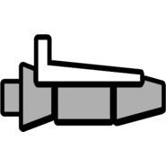

Core Mechanics & Gamemodes
At its surface, Geometry Dash appears deceptively simple. However, beneath the one-button control scheme lies a deeply technical system of physics interactions, precision timing, and mechanical variation.
Each gamemode alters how player input is interpreted, forcing constant adaptation and mastery. The interaction between gamemodes, modifiers, and speed portals is what creates the game’s extreme difficulty ceiling.
Cube
The Cube is the foundational gamemode, relying on timed jumps and momentum. Holding the input allows for chained jumps on pads and slopes, while mistimed inputs result in instant failure.
Ship
The Ship introduces continuous vertical control. Holding input causes ascent, while releasing results in descent, requiring smooth modulation rather than discrete taps.
Ball

The Ball gamemode flips gravity with each input, forcing players to anticipate terrain transitions and timing windows rather than reacting in real time.
UFO

The UFO performs fixed-height jumps per input. Rapid tapping and rhythm consistency are required, particularly at higher speeds.
Wave

The Wave is the most mechanically demanding gamemode. Continuous diagonal movement forces players to execute frame-perfect holds while navigating narrow corridors.
High-level Wave gameplay often requires hundreds of hours of muscle memory conditioning.
Spider

The Spider teleports instantly between surfaces, prioritizing spatial awareness and rapid decision-making.
Modifiers & Portals
Advanced Mechanics & Precision
At higher levels, Geometry Dash transitions from reaction-based gameplay to precision execution governed by the physics engine.
| Technique | Description |
|---|---|
| Straight Fly | Maintaining constant vertical alignment in Ship mode |
| Frame-Perfect | Inputs requiring exact frame timing |
| Timings | Rapid rhythmic input sequences |
| Corner Clips | Hitbox exploitation at sub-pixel positions |